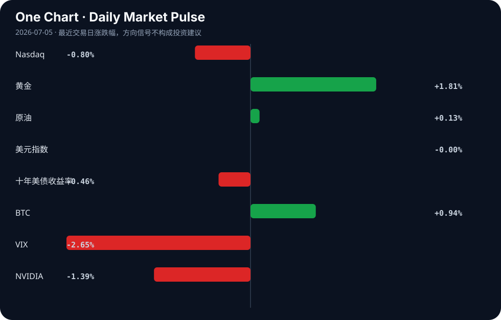

Daily Intelligence
2026-07-05｜Sunday
Today’s Thesis｜今日一句话
AI Agent 的商业化正撞上“成本墙”与“质量墙”，从替代人力的叙事转向人机协同的现实；同时，全球央行购金创本世纪新高，资本在技术不确定性中寻求实物资产确定性。
① Executive Summary｜30 秒
- AI：AI Agent 技术进展不及预期且运行成本飙升，企业开始引入预算协议限制支出，并在关键质量把控环节重新雇佣人类 [A3, A9, A11, A22]。
- 商业：重度 AI 采用者反而增加雇佣，制药与制造巨头加速设立 AI 高管与工业 AI 合同，人机协同替代单纯替代 [A4, A8, A21]。
- 宏观：全球央行黄金储备达本世纪最高水平，美联储 7 月大概率按兵不动，去美元化与避险需求正重塑全球资本锚点 [B10, B21]。
② AI Daily
Agent 的成本与进展瓶颈
What Happened：Meta 扎克伯格承认 AI Agent 技术进展慢于预期 [A11]；AI 运行成本已超过被替代的工人 [A9]；开发者提出“原子预算预留”协议以阻止 Agent 失控支出 [A3]。 Why It Matters：打破了 AI 无限廉价替代人力的幻象，ROI 计算从“能力可行”转向“经济可行”，无预算约束的 Agent 在复杂任务中具有财务毁灭性。 Second-order Effect：Agent 预算协议标准化 → 企业 AI 支出可控化 → 垂直场景的 SaaS 订阅制重于按 Token 计费。
质量塌陷与人类回归
What Happened：福特汽车因 AI 未能匹配质量检查，重新雇佣人类工程师 [A22]。 Why It Matters：证明在容错率极低的工业制造环节，AI 的“统计概率正确”无法替代人类的“确定性验证”，1% 的缺陷率在工业规模下不可承受。 Second-order Effect：AI 质量缺陷 → 人类重新介入 → “AI 生成+人类审核”成为高价值流程标配。
OS 级重构与记忆架构演进
What Happened：泄露视频显示微软正开发完全围绕 Copilot 和 Agentic AI 构建的轻量级 Copilot OS [A1]；行业反思检索不是 AI 未来，长期记忆机制才是关键 [A24]。 Why It Matters：AI 从应用层下沉到系统层，且从外部 RAG 检索转向内化记忆模型，这改变了计算交互的根本范式。 Second-order Effect：OS 级 Agent → 硬件唤醒机制优化（如 Wake-on-LAN [A13]）→ 端侧 AI 算力与内存超级周期强化 [A14]。
③ Business Daily
制造：福特重新雇佣人类工程师以弥补 AI 质量不足 [A22]；BigBear.ai 获得造船厂合同及供应链工具推进工业 AI [B8]；Carl Zeiss Meditec 完善制造分析 [B9]。AI 在制造业从“替代”走向“辅助与质检补位”。
医疗：基层医生配备“AI助手” [A12]；制药巨头任命 AI 高管 [A21]；健康中国政策释放商业健康险空间 [B22]。AI 在医疗的渗透从研发端向基层诊疗与保险支付端延伸。
消费/物流：中国今年快递业务量已超千亿件 [B1]；海天味业获回购利好支撑股价 [B4]。物流基建红利见顶，消费龙头靠回购稳市值，反映内需弱复苏下的防御性操作。
④ Macro Observation｜机制分析
世界正在发生什么？ 全球央行将黄金持有量推至本世纪最高水平 [B10]，黄金价格在创纪录高位展现韧性 [B13]。美联储 7 月维持利率不变的概率达 82.4% [B21]。
为什么发生？ 储备策略正在演变，央行对冲美联储政策风险与地缘不确定性 [B7, B24]。西方关于“产能过剩”的言论反映了对中国工业崛起的恼怒 [B2]，夏季达沃斯上中国展示工业实力 [B3]，全球供应链与防务市场（北约需要防务市场 [B17]）正在重组。
资本如何流动？ （推断）资本正从高估值且进展遇阻的纯软件 AI Agent 概念流出，流入具有确定性的实物资产（黄金）与绿色经济（已超 10 万亿美元 [B20]）。AI 内存超级周期因端侧 OS 重构获得资金支撑 [A14]。
接下来关注什么？ 美联储降息预期与央行购金的博弈 [B24]；AI 预算协议能否在开源社区形成事实标准 [A3]；中国低空经济与绿色经济的政策落地转化为订单的节奏 [B19, B20]。
⑤ Signal Dashboard
| 指标 | 最新值 | 今日 | 信号 |
|---|---|---|---|
| Nasdaq | 25,832.67 | ↓ -0.80% | 风险偏好降温 |
| 黄金 | 4,187.30 | ↑ +1.81% | 避险/通胀对冲增强 |
| 原油 | 68.78 | ↑ +0.13% | 供需平衡 |
| 美元指数 | 100.86 | → -0.00% | 中性 |
| 十年美债收益率 | 4.37 | ↓ -0.46% | 利好久期资产 |
| BTC | 63,133.99 | ↑ +0.94% | 风险偏好改善 |
| VIX | 16.15 | ↓ -2.65% | 风险偏好改善 |
| NVIDIA | 194.83 | ↓ -1.39% | 风险偏好降温 |
⑥ Deep Insight
过去两年，AI 的核心叙事一直是“廉价且全能的劳动力替代”。但今天的信号表明，这一叙事正撞上两堵高墙：“成本墙”与“质量墙”。[A9] 明确指出 AI 变得比它取代的工人更昂贵，[A11] 承认 Agent 技术进展不及预期，而 [A22] 中福特重新雇佣人类工程师则是对质量塌陷的直接回应。
机制上，Agentic AI 需要多步推理、工具调用与迭代纠错。每一次循环都在消耗 Token。若没有 [A3] 提出的“原子预算预留”机制，一个简单的任务可能因 Agent 陷入死循环而指数级消耗资源。AI 的运行成本并不随模型缩小而线性下降，反而随任务复杂性指数上升。同时，[A4] 显示重度 AI 采用者雇佣了更多人，这意味着 AI 扩大了业务边界，而非单纯缩减人头，管理扩大的边界仍需人力。
在质量方面，大语言模型本质是概率机。在容错率高的文案生成中，99% 的概率正确尚可接受；但在福特的汽车制造质检中，1% 的缺陷率意味着大规模召回。人类工程师提供的是确定性验证，这是概率模型无法内生提供的。因此，“AI 生成+人类审核”将成为高价值流程的强制标配，但审核成本往往在初期 ROI 计算中被忽略。
非共识视角在于：市场仍将 AI 视为通缩力量（压低劳动力成本），但短期内 Agentic AI 实际上是通胀力量（推高算力与内存成本 [A14]、推高人类审核溢价）。AI 的真正价值不在于替代，而在于通过 OS 级重构（如 [A1] 的 Copilot OS）和记忆架构演进（[A24]）扩大可解决问题的边界，这需要庞大的 Capex 支撑。
反方观点认为，规模定律与更廉价的端侧模型（如 [A13] 的本地 RTX 5080 方案）终将打破成本墙，而自我纠错循环将攻克质量墙。证伪条件：若未来两三个季度内，AI SaaS 企业的毛利率显著扩张，同时 Agentic 工具的 ARPU 值稳定或下降，则成本墙被打破；若制造业的 AI 质检缺陷率在不依赖人类在环监督的情况下降至人类基线以下，则质量墙被打破。在此之前，应预期 [A3] 类预算协议与“AI 操作员”岗位的激增。
⑦ Tomorrow Watch
1. 验证微软 Copilot OS 泄露视频的真实性及官方回应 [A1]。
2. 追踪开源社区对“原子预算预留”协议（agent-budget-protocol）的采纳度与 Star 数 [A3]。
3. 关注美联储 7 月议息会议前最后几位官员的讲话，确认 82.4% 暂停加息概率的稳定性 [B21]。
4. 观察福特汽车重新雇佣人类工程师后的产能与质检数据披露 [A22]。
5. 监控全球央行黄金储备数据的下一期发布，验证“本世纪最高水平”趋势是否延续 [B10]。
⑧ One Chart

图表反映了风险偏好的分化：科技股（Nasdaq、NVIDIA）降温，而避险资产（黄金）与特定风险资产（BTC）同向上行。这种相关性暗示资本在从高估值科技板块流出时，并未全面撤退，而是在寻找替代的流动性出口，但这并不构成黄金与 BTC 具有相同宏观驱动的因果证明。
⑨ Quote of the Day
“Price is what you pay. Value is what you get.”
— Warren Buffett
⑩ Action Items｜今天值得思考什么
1. 思考：当 AI 推理成本超过人工成本时，企业的 AI 转型优先级应如何重排？
2. 验证：你所在行业的容错率是否允许 AI 独立决策，还是必须建立“AI 生成+人类审核”的闭环？
3. 比较：RAG 检索增强与长期记忆模型在具体业务场景中的边际成本差异 [A24]。
4. 追踪：央行购金行为与本国货币汇率波动之间的反身性影响 [B10]。
5. 关注：绿色经济（超 10 万亿美元 [B20]）与低空经济 [B19] 的政策补贴向商业化订单转化的时滞。
信息边界
- 来源覆盖：AI 技术动态、全球宏观经济与央行政策、中美股债汇商核心资产、部分产业政策。
- 时效：新闻截至 2026 年 7 月 4 日至 7 月 5 日晨（UTC）。
- 市场数据：反映最近交易日收盘或盘中状况，存在滞后性。
- 限制：部分新闻源自二手聚合或泄露视频，重要判断需回溯原文验证；未覆盖非英语/中文源的其他地缘突发新闻。
Sources
AI
- A1：Microsoft Copilot OS revealed in LEAKED video: built on Copilot and agentic AI — Hacker News · AI
- A3：RFC: Stopping runaway AI agent spend with atomic budget reservations — Hacker News · AI
- A4：Ramp data shows heavy AI adopters hire more — Hacker News · AI
- [A9：How AI Became More Expensive Than the Workers It Replaced [video]](https://www.youtube.com/watch?v=cfaZZPjA3g0) — Hacker News · AI
- A11：Exclusive-Meta's Zuckerberg says AI agent tech progressing slower than expected — Hacker News · AI
- A12：当基层医生有了“AI助手” - 新浪财经 — Google News · AI 中文
- A13：Show HN: Using Wake-on-LAN for an AI Project — Hacker News · AI
- A14：The artificial intelligence (AI) memory supercycle is getting stronger. Here's how you can profit from this boom with less than $100 - MSN — Google News · AI
- A21：刚刚，又一制药巨头任命AI高管 - 新浪财经 — Google News · AI 中文
- A22：Ford rehires human engineers after AI fails to match quality checks — Hacker News · AI
- A24：Retrieval is not the future of AI – if it was, Google would have won already — Hacker News · AI
Business & Macro
- B1：今年我国快递业务量已超千亿件 - 人民日报 — Google News · 行业
- B2：Opinion | ‘Overcapacity’ talk reflects a West irked by China’s industrial rise - South China Morning Post — Google News · Global Economy
- B3：At WEF summer Davos, China flexes industrial heft and vision - The Sunday Guardian — Google News · Global Economy
- B4：“酱茅”海天味业大涨！股价创五年新低后，获回购等多重利好支撑 - 新浪网 — Google News · 行业
- B7：Gold Price Resilience: Real Yields, Fed Risk & Central Bank Reserves - equiti.com — Google News · Markets Policy
- B8：BigBear.ai (NYSE: BBAI) Pushes Into Industrial AI With Shipyard Contracts And Supply-Chain Tools - foreignpolicyjournal.com — Google News · Technology Business
- B9：Carl Zeiss Meditec (XTRA:AFX) Refines Manufacturing Analytics, Is It A Bargain? - simplywall.st — Google News · Technology Business
- B10：Central Banks Push Global Gold Holdings to Highest Level This Century as Reserve Strategies Evolve - MEXC — Google News · Markets Policy
- B13：Gold Price Record Highs 2026: Investment Strategy & Market Analysis - Intellectia AI — Google News · Markets Policy
- B17：NATO Needs a Defense Market - logos-pres.md — Google News · Global Economy
- B19：深耕产学研一线 青年团队助力低空经济规范化高质量发展 - 搜狐网 — Google News · 行业
- B20：The green economy has just surpassed $10 trillion and would already be the world's third-largest industry if it were counted as a separate sector - ECOticias.com — Google News · Global Economy
- B21：Fed Expected to Hold Rates in July as Markets Price in 82.4% Chance of Pause - MEXC — Google News · Markets Policy
- B22：张琅：健康中国政策的落地进一步释放商业健康保险空间 - 新浪财经 — Google News · 行业
- B24：gold-prices-blocked-central-bank-demand-vs-fed-rate-hike-risks - equiti.com — Google News · Markets Policy